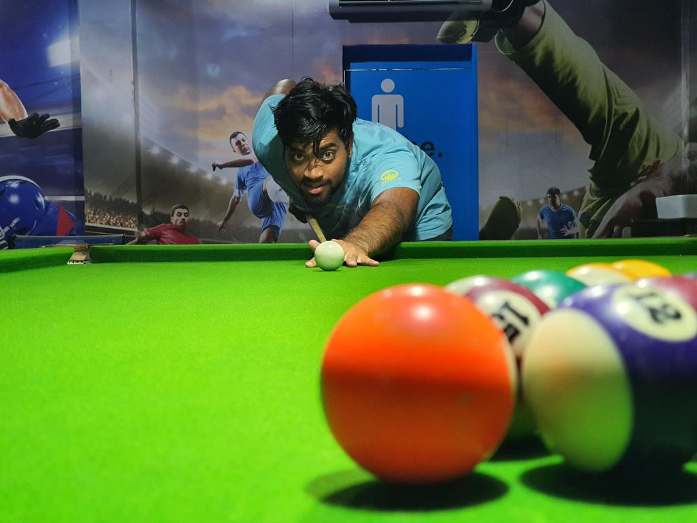
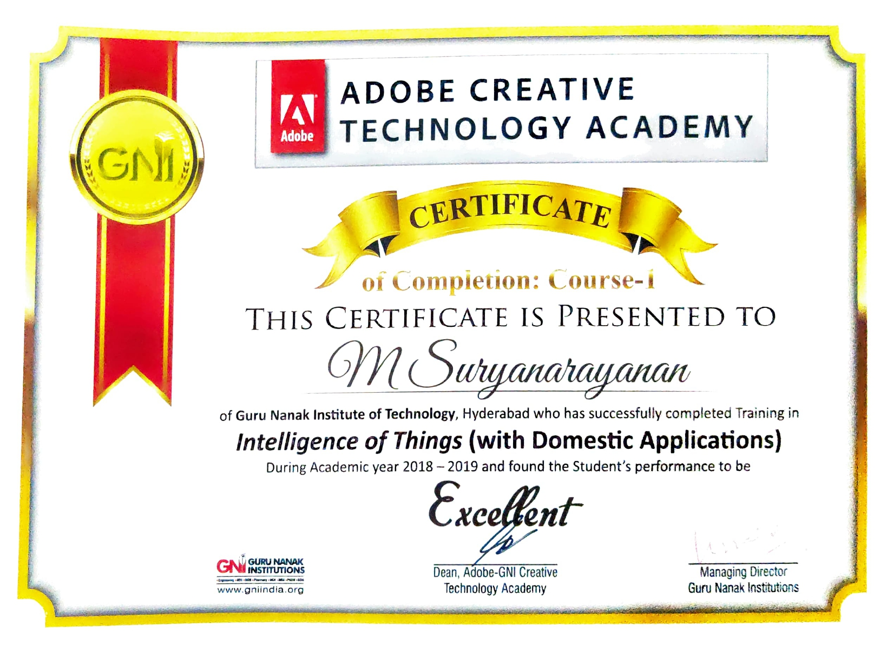
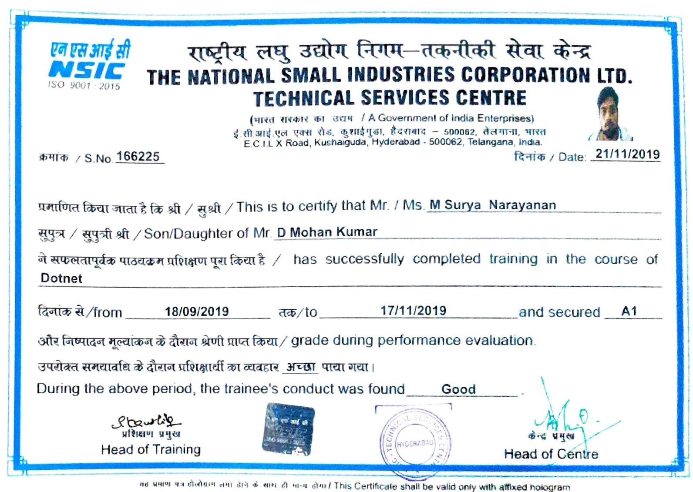
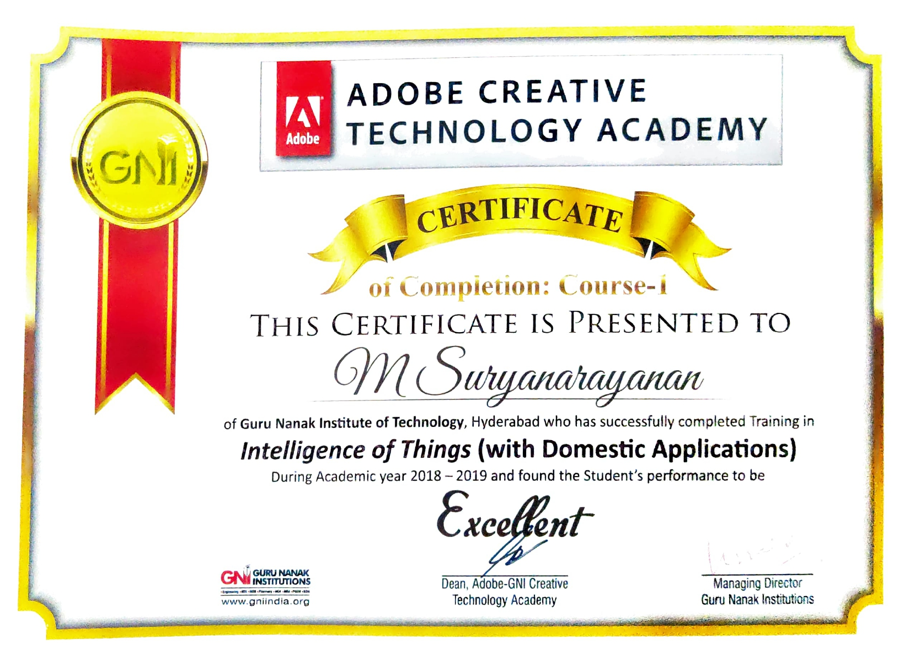
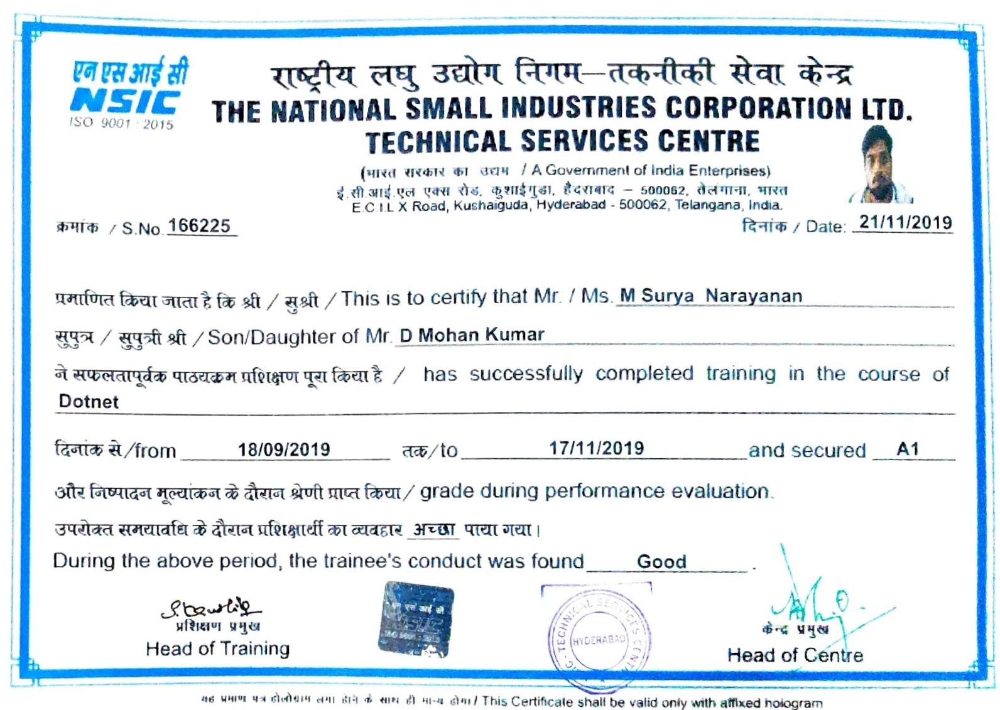

About Me

 



In the year 2015, I successfully completed my 10+2 education with distinction, equivalent to higher education (HE) and GCE level A. During this period, my strong admiration for sports, including Wimbledon, football, and cricket, reflected my well-rounded interests. Concurrently, my fascination with computers and proficiency in technologies like Python and C language deepened, providing me with a profound understanding of electronic components integral to computer systems.
BTech in Electronics and Communication Engineer,Jawaharlala Nehru Institute of Technology,Hyderabad,
Hyderabad,
This intellectual journey steered me towards the captivating field of Electronics and Communication Engineering. Over the course of four years, I delved into intricate subjects such as Verilog design, embedded systems, antenna and wave propagation, as well as analog and digital communications. This academic pursuit not only enriched my knowledge but also cultivated a discerning mindset, allowing me to appreciate the intricate interplay of electronic elements within complex systems.
MSc in Network and Information Security,Kingston University,London,
London,
Following my graduation as an Electronics and Communication Engineer, I was extended the prestigious opportunity by the National Small Scale Industry Corporation to serve as a Software Systems Engineer. Immersed in this role, I collaborated with diverse clients looking to develop extension for their VoIP (Voice over Internet Protocol) environment. Over two years of administration across varied computer systems in diverse environments, my professional journey helped me delve deeper into the intricacies of this dynamic domain of Security.
In the year 2021 elected to pursue a Master's degree at Kingston University. The ensuing course provided me with a comprehensive education in advanced security fundamentals, encompassing areas such as Networking, Network and Information Security, and Mobile Security as integral components of the taught modules.In January 2023, I proudly graduated with First Class Honors, a testament to my academic diligence and commitment to excellence.